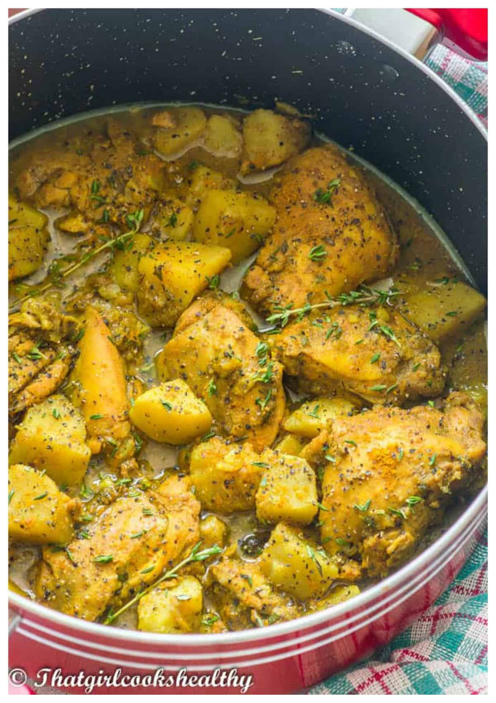

Curry Chicken

Description
Part of your "So you grew up with a west indian" starter pack!
Ingredients
- Chicken: You can use any type of chicken cut for this dish. A whole chicken provides the most variety for different folks at the dinner table.
- Onion: Whole fresh onion sliced into somewhat thin rings; amount used may vary depending on amount of curry to be made or chicken used.
- Green Seasoning: A mixture of thyme, "shadow benni" (alt: ), scallions (alt: green onions), a whole green/yellow/red pimiento pepper (or hotter scotch bonnet pepper if you like spice). Some will also add ginger, a cracked clove of garlic . (Lifehack: a puree of this mixture can be kept refridgerated in a container of your choice then used as a quick marinade over chicken and other meats to be curried)
- Curry Powder: It is very important to select Jamaican curry powder for this while doing your shopping. Indian, Japanese and other such curry powders aim for a totally different experience and are balanced in ways that do not make for a great experience with this dish (yes that comes from past experiences from others). Personally, I recommend "Blue Mountain" brand hot & spicy curry powder. There's your product placement.
- Hot Peppers: Jamaican curry is most often made with a bit of a kick but you can omit and experiment with pepper types that suit your palette. Traditionally, a single or partial fresh Scotch Bonnet pepper, hot Trinidadian pimento pepper or even just dried red hot pepper flakes can be used.
- Dry & Powdered Seasonings: Onion and garlic powder are nice, all purpose seasoning (Ms. Dash and similar products) go here too, dried red pepper flakes for additional/alternative spice control, salt/chicken salt(bullion).
- "Provisions" & Extras: Diced carrots, potatoes, & yellow yams can be added to the pot for additional starches and variety. Flour based dumplings ("spinners") can also be added to the stew for more variety.
Steps
Here's a very brief run down of how to prepare this dish:
- Add the washed chicken to a large bowl and use a fork to pierce the flesh of each piece of chicken. This helps the seasoning to better penetrate.
- Sprinkle on the Jamaican curry powder, all-purpose seasoning, ginger, black pepper along with the onions, scallions and garlic.
- Use your hands to thoroughly work in the seasoning, cover with saran wrap (cling film) and refrigerate overnight or for a few hours.
- On medium heat, add the oil to a large pot/dutchpot. Add the 1tbsp of curry powder to the pan and proceed to cook it for about one minute until fragrant.
- Scrape off the excess seasoning (i.e onions, scallions and garlic) and place the chicken pieces into the pot, being carefully to not overcrowd.
- Proceed to seal and sear the both sides of the chicken until brown (the chicken will extract its own juices, be sure to cook this off as this will help to enhance the taste by locking in the flavour).
- Once the chicken is seared, stir in the onions, scallions and garlic and saute until translucent.
- Add the sprigs of fresh thyme, pimento berries and stir the pot.
- Pour in the hot water, then bring to a rolling boil.
- Reduce the heat to medium/low and simmer with the lid on for 10 minutes
- Add the potato and salt, to taste, stir, then simmer for another 20 minutes.
- Add a splash of water if the gravy reduces too much and/or becomes too thick.
- Remove the thyme stems before serving.
Return to Recipes List